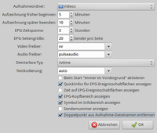
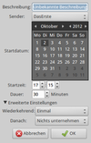

Me TV
Dieser Artikel wurde für die folgenden Ubuntu-Versionen getestet:
Ubuntu 16.04 Xenial Xerus
Ubuntu 14.04 Trusty Tahr
Zum Verständnis dieses Artikels sind folgende Seiten hilfreich:
Me TV ("it's TV for me computer") ist ein auf der GTK-Bibliothek basierender DVB-Spieler für digitales Fernsehen. Das Programm bietet Unterstützung für DVB-T, DVB-C, DVB-S und ATSC.
Des Weiteren ist ein elektronischer Programmführer (EPG) enthalten, der auch für eine sofortige, zeitlich gesteuerte oder sich regelmäßig wiederholende Aufnahme geeignet ist. Unterstützung für zweisprachige Sender und Untertitel ist ebenfalls enthalten.
Nachdem sich der ursprüngliche Programmautor Michael Lamothe Mitte 2011 während der Entwicklung der Version 2.0 aus dem Projekt verabschiedet hat, wird derzeit versucht, die bereits vorhandenen Änderungen zurück zu portieren. Dazu werden aber noch weitere Entwickler gesucht.
Installation¶

Folgendes Paket muss installiert [1] werden:
me-tv (universe)
 mit apturl
mit apturl
Paketliste zum Kopieren:
sudo apt-get install me-tv
sudo aptitude install me-tv
Das Programm findet man bei Ubuntu-Varianten mit einem Anwendungs-Menü anschließend unter "Multimedia -> Me TV".
Konfiguration¶
Sendersuchlauf¶
Bevor das Programm gestartet werden kann, muss zunächst das TV-Empfangsgerät angeschlossen (und unter Umständen konfiguriert) werden. Der erste Programmstart [2] wird unterbrochen von einem Assistenten, der einen automatischen Sendersuchlauf anbietet. Dazu wählt man entweder die gewünschte Region aus oder lässt das Programm selbst suchen. Als weitere Möglichkeit kann eine bestehende Senderliste (channels.conf) importiert werden.
Hinweis:
FÜr DVB-S-Empfangsgeräte ist die Option „Automatische Suche“ nicht verfügbar.
Die neue Senderliste wird automatisch in der Datei ~/.local/share/me-tv/me-tv.db gespeichert. Bei einem späteren Standortwechsel löscht man daher einfach diese Datei. Beim nächsten Programmstart erscheint dann der oben beschriebene Assistent.

Einstellungen¶
Über "Ansicht -> Einstellungen" können Einstellungen zu Me TV vorgenommen werden. Neben dem Aufnahmeordner können unter anderem Aufnahmeoptionen, Anzeigeoptionen des EPG und Streaming-Einstellungen verändert werden.
Bedienung¶
Nach dem Start des Programms ist der elektronische Programmführer (EPG) aktiv. Der EPG ist u.U. erst sichtbar, wenn er vom unteren Bildrand "hochgezogen" wird. Der EPG zeigt die aktuellen Sendungen aller gefundenen Sender an. Falls nicht, erfolgt die Aktualisierung spätestens bei einem Senderwechsel. Durch einen einfachen Linksklick  auf den jeweiligen Sendernamen wird zwischen den verschiedenen Sendern gewechselt.
auf den jeweiligen Sendernamen wird zwischen den verschiedenen Sendern gewechselt.
Um mehrere Sender in der EPG-Übersicht zu erhalten, erhöht man unter "Ansicht -> Einstellungen -> EPG-Sender pro Seite" die Anzahl gleichzeitig dargestellter Sender.
Leiste¶
In der Systemleiste (Panel) erscheint Me TV nach dem Programmstart als Symbol (Icon). Ein Linksklick auf dieses minimiert das Programm und deaktiviert den Ton, ohne die Aufnahme zu beeinträchtigen. Ein erneuter Linksklick stellt das Programmfenster wieder her.
Das Programm kann im Gegensatz zu anderen Programmen nicht einfach beenden werden. Dazu ist vielmehr ein Rechtsklick ( ) auf das Panel-Symbol erforderlich, das eine Option zum Schließen von Me TV bietet (siehe auch Problembehebung).
) auf das Panel-Symbol erforderlich, das eine Option zum Schließen von Me TV bietet (siehe auch Problembehebung).
Programmsuche¶
Über "Ansicht -> Programmsuche" kann man im EPG nach gewünschten Fernsehsendungen suchen. Enthält ein Titel das Suchwort, wird die entsprechende Sendung farbig hervorgehoben.
Untertitel¶
Untertitel können über "Ansicht -> Untertitel" (de)aktiviert werden.
Vollbild¶
Um den Vollbildmodus zu (de)aktivieren, genügt ein Doppelklick innerhalb des Videofensters oder die Betätigung der Taste
F .
Zweikanalton¶
Sollte ein Sender sein Programm zweisprachig ausstrahlen, besteht die Möglichkeit, über "Audio -> Zweikanalton" einen der beiden Sprachen bzw. Kanäle zu deaktivieren. Über "Audio -> Datenströme" kann die Tonspur gewechselt werden.
Aufnahme¶
Unter neueren Programmversionen werden Aufnahmen automatisch als Name der Sendung - Sender - Datum Uhrzeit.mpeg als MPEG-TS im Homeverzeichnis gespeichert. Aufnahmen dieses Typs müssen aber noch in das Format MPEG-PS umgewandelt werden, um mit beliebigen Videoplayern abgespielt werden zu können (siehe auch Verarbeitung von Transportströmen).
Sofortaufnahme¶
Die sofortige Aufnahme kann einfach durch Betätigung des "Aufnahme"-Schalters aktiviert werden. Die Aufnahme läuft bis zur erneuten Betätigung des Schalters. Aufgenommen wird das jeweils laufende Programm.

Aufnahmeprogrammierung¶
Um eine zeitlich gesteuerte Aufnahme zu starten, gibt es zwei Möglichkeiten:
die "Aufnahmeplanung" oder
den EPG
Nach Betätigung des Schalters "Aufnahmeplanung" kann man durch  "Hinzufügen" die erforderlichen Daten hinterlegen. "Löschen" entfernt die angewählte Aufnahme. Ein Doppelklick ermöglicht es, Details der Aufnahmeprogrammierung zu verändern.
"Hinzufügen" die erforderlichen Daten hinterlegen. "Löschen" entfernt die angewählte Aufnahme. Ein Doppelklick ermöglicht es, Details der Aufnahmeprogrammierung zu verändern.
Ebenfalls in diesem Menü befinden sich die Einstellungen für eine sich regelmäßig wiederholende Aufnahme. Unter Aufnahmetyp muss lediglich "Jeden Tag außer an Wochenenden", "Jeden Tag einschließlich Wochenende" oder "Jede Woche" gewählt werden.
Die zweite Möglichkeit bietet der elektronische Programmführer EPG. Durch einen einfachen Linksklick auf die gewünschte Sendung öffnet sich ein Menü, in dem die Aufnahme ausgewählt werden kann. Die sich nun öffnenden Einstellungen entsprechen den bereits oben erwähnten, bieten jedoch den Vorteil, dass die jeweiligen Zeiten und der Dateiname bereits auf die gewünschte Sendung angepasst sind. Im Regelfall bietet es sich an, diese Variante zu bevorzugen.
Problembehebung¶
Unity¶
Bei der Desktop-Oberfläche Unity bzw. ab Ubuntu 11.04 treten Probleme bei der Anzeige des Panel-Symbols auf. Eine Lösung für Ubuntu 12.04 findet sich im Artikel Unity Desktop.
Unter Unity ist noch ein weiteres Problem aufgetreten: Nach dem Programmstart ist teilweise der elektronische Programmführer verborgen und so auch keine Kanalauswahl bzw. ein Senderwechsel möglich. Das Problem kann behoben werden, indem mit der Maus (bei gedrückter linker Maustaste ) der obere Rand der unteren Symbolleiste nach oben geschoben wird, bis der EPG sichtbar wird.
Bildqualität¶
Bei Problemen mit der Bildqualität von DVB-T können folgende Einstellungen helfen:
Video Driver: xv statt xshm
Deinterlace Type: tvtime statt standard
Mehrere TV-Karten¶
Um bei mehreren verwendeten Karten eine bestimmte anzuwählen, kann Me TV mit der Option --devices /PFAD/ZUM/GERÄT gestartet werden; z.B. --devices /dev/dvb/adapter1/frontend0, um die zweite DVB-Karte (adapter1, die Zählung beginnt bei 0) anzusprechen. Es ist auch möglich, die Angaben für mehrere Karten zu kombinieren, z.B. um eine DVB-T- mit einer DVB-S-Karte gleichzeitig zu verwenden.
Bildschirmschoner¶
Falls während der TV-Wiedergabe der GNOME-Bildschirmschoner anspringt, kann das Programm Caffeine weiterhelfen. Ansonsten muss man den Bildschirmschoner während der Nutzung von Me TV deaktivieren.
Startprobleme¶
Bei wenig Platz im eigenen Homeverzeichnis startet Me TV nicht (bzw. gibt nur irreführende Informationen aus). Abhilfe kann beispielsweise das Leeren des Papierkorbs schaffen.
 Übersichtsartikel
Übersichtsartikel- Erstellt mit Inyoka
-
 2004 – 2017 ubuntuusers.de • Einige Rechte vorbehalten
2004 – 2017 ubuntuusers.de • Einige Rechte vorbehalten
Lizenz • Kontakt • Datenschutz • Impressum • Serverstatus -
Serverhousing gespendet von